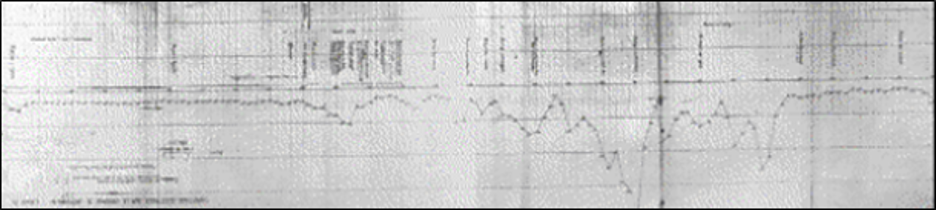
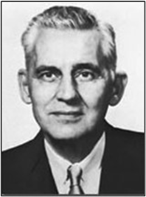
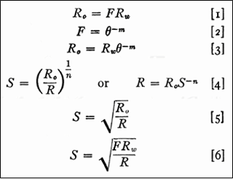
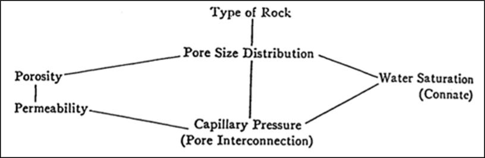
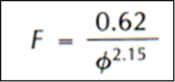
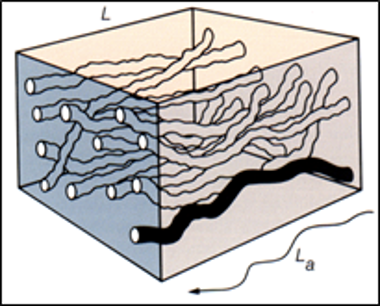
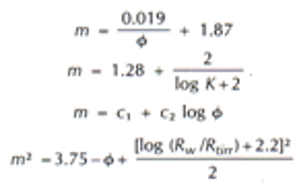
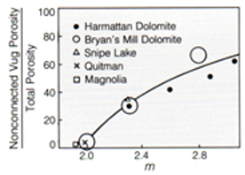
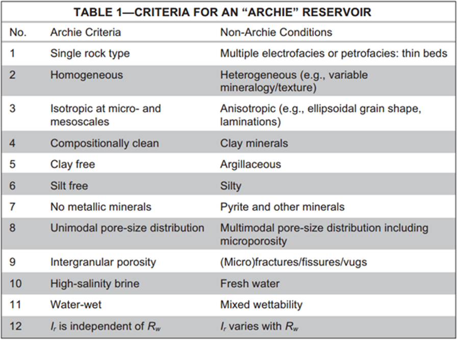

Introduction
In 1927, the first log (Figure 1) was recorded by Schlumberger brothers, 500m deep well in France. Since then, logging tools have been emerged as a way for us to record the physics of rock beneath earth’s surface. 1927; the first electric log (SP and resistivity log), 1932; the first caliper log and dipmeter (along with sidewall coring), and 1939 the first nuclear log (gamma ray). During that time, SP and resistivity were the most used logs to interpret where the oil is. However, the interpretation is merely qualitative, without any quantitative information (porosity, oil saturation). Until 1942, when Gus Archie published paper: “The Electrical Resistivity Log as an Aid in Determining Some Reservoir Characteristics”. He laid the basic foundations of quantitative interpretation between porosity-resistivity and saturation of hydrocarbon in reservoir, which introduced us to the whole new world of modern log interpretation.

Who is He?
Gustave E. Archie (Figure 2) was graduated from Wisconsin University in two degrees, Mining and Electrical Engineering. Archie started his professional career in Shell Oil Company, spending more than 30 years (1933-1967) as production engineer, logging engineer, to exploitation manager until his retirement. His most influenced contribution to well log interpretation is pioneering modern well log measurement to determine hydrocarbon reservoir. His contribution towards oil and gas industry earns him a Lester C. Uren Award in 1964 and AIME’s Anthony F. Lucas Gold Medal for recognition of his pioneering achievements in 1978. He has four papers under his name, which help to pave the way from qualitative interpretation towards quantitative interpretation and better understanding about petrophysics as we know today.

The Origin of Archie’s Equation
There are some people who thought that Archie’s equation is like the one that we know today (Equation 1). The truth is at the early publication from Gus Archie in 1942, Archie actually never wrote that famous equation explicitly. It took several times to get to there. Instead, he wrote six formulas (Figure 3), a step by step of his thought process towards the final equation to calculate water saturation.
In the final equation, Archie never states the “a” as tortuosity factor and “m” as cementation factor. They are nothing but gradient/ exponents in the relationship from crossplot. In his paper, Archie stated that “m” usually ranges from 1.8-2.0, and “n” usually 2. He never stated anything about “a”, “m”, nor “n” as meaningful constants. Although later on after Archie, several authors have been trying to relate those constants to something related to rock (cementation, wettability, permeability, etc).
\[ S_{w} = \sqrt[n]{\frac{a \times R_{w}}{\phi^m \times R_{t}}} \tag{1}\]

Out of 4 papers that have been published by Gus Archie, there are 2 fundamental papers that shaped our understanding in petrophysics. First is the 1942’s paper, which talked about quantitative interpretation of well log measurement based on rock properties (porosity and saturation). Second is the 1950’s paper, which talked about rock-type, talking about connection and interaction between porosity-permeability-pore size distribution-water saturation-and capillary pressure (Figure 4).

In this paper, it was the first time Archie proposed the term “Petrophysics” as the study of physics of the rock (hence the name; petro-physics). Take a look at what Gus Archie proposed in his paper in 1942:
There is a need for a term to express the physic of rock. It should be related to petrology as much as geophysics is related to geology. “Petrophysics” is the suggested as the term pertaining to the physics of particular rock types, whereas geophysics pertains to the physics of larger rock system composing the earth, (Archie, 1942).
The Development of Archie’s Equation
After the original paper from Archie in 1942, and continued with several important papers afterwards (1947, 1950, and 1951). The busy years of Gus Archie has passed and successfully changed our understanding towards hydrocarbon evaluation using well log measurement. By far, Archie’s Equation is the most used equation in petrophysical industry. The equation is so robust and reliable in almost any condition of the reservoir. It is simple and it just works.
However, since 1942 people has been considering that the Archie’s equation needs to be improved. It is in 1944, just 2 years after Archie’s first paper. Hubert Guyod, a Houston-based well logging consultant proposed the term “m” as cementation exponent. Next in 1950, Wyllie and Rose proposed the tortuosity factor (“a”) in Archie’s equation (Figure 5). These two insights of Archie’s original equation are crucial, as they reveal the fact that these constants (a & m) are not a single unique number, rather they are related to properties of the rock itself.

Later those years, in 1952, Winsaeur and colleagues from Humble Oil & Refining Company thought that the tortuosity factor is a good idea and did some experiments on sandstone core samples all over US. They found out what we know now as Humble Formula, a different type of Archie, with “a=0.62” and “m=2.15” different from the original Archie’s equation (Figure 6). Eventually, after years, in 1960s, Wyllie and Gregory settled and proposed a new form of Archie’s equation, as we know today (Equation 1). Where “a”, “m”, and “n” are a constants/ archie’s constants.

Years after that, several authors have been trying to find a way to calculate “m” from porosity. Although some publications were available, these approach of calculating “m” using porosity and other variable, needs to be taken by caution due to its unique and specific case only (Figure 7)

Research about “a”, “m”, and “n” of Archie’s equation have been done years after that. Even further, it has been applied to carbonate rocks instead of using just sandstones. One of the most famous publication was done by Jerry F. Lucia from Shell Oil Company, which shows that “m” is vary from different type of porosity, such as fracture porosity and vuggy porosity (Figure 8).

The non-Archie Reservoir
Although Archie’s equation has been used extensively in oil and gas industry, the reliability of it has been challenged over the past 50 years. Historically speaking, his equation is an empirical equation. Meaning, it was based on actual data that he was working on, with certainly some conditions and treatments which need to be met prior to experiment.
These conditions (two most important) are matrix is insulator and the only conductivity pathway is saline water in pores. These conditions were met when Archie proposed his equations. However, after Archie, people started to meet challenging reservoir like shaly sand, fresh water, or conductive mineral. These types of reservoir are not the same reservoir as Archie tested. Archie’s tested rock was clean sandstone with good intergranular porosity. These types of reservoir usually called a “Archie Reservoir”, while other challenging reservoir where Archie’s assumptions were not met is called “Non-Archie Reservoir”. Worthington lists all the conditions between Archie and Non-Archie Reservoir (Figure 9).

Closing Words
Despite the weaknesses of Archie’s equation, the significance of Archie’s contribution in paving the way for modern log interpretation is unfathomable. His equation is so simple, not simplest. It was based on empirical experiments, and it just works. Although there are over 300 equations have been developed to encounter all Non-Archie reservoir, especially shaly sand. We can clearly say that Gustave E. Archie is the founding father of modern Petrophysics.